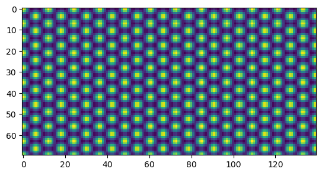
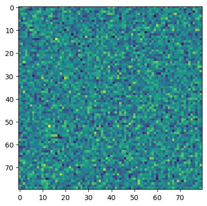

Kirkendall: A PFC application
In this application, Ref. 1 is reproduced.
Free Energy
The free energy functional of the Kirkendall model reads:
\begin{align} F = \int d\mathbf{x}\left[\frac{n}{2}\Lambda^0n - \frac{t}{3}n^3 + \frac{v}{4}n^4 + \gamma\psi + \frac{\omega}{2}\psi^2 + \frac{\mu}{4}\psi^4 + \frac{K}{2}\lvert\vec{\nabla\psi}\rvert^2\right] \end{align}
where \(n=n_A+n_B\), \(\psi=n_A-n_B\), and
\begin{align} \Lambda^0 = \left(B_0^l-B_0^x\right) + B_2^l\psi^2 + B_0^x\left(1+\nabla^2\right)^2 \end{align}
One Mode Expansion in 2D
On page 164 of Nikolas Provatas & Ken Elder. Phase-Field Methods in Materials Science and Engineering. (Wiley-VCH Verlag GmbH & Co. KGaA, 2010). doi:10.1002/9783527631520., the approximated density in 2D case reads:
\begin{align} n = \bar{n} + A\left[\frac{1}{2}cos\left(y\right)+ cos\left(\frac{\sqrt{3}}{2}x\right)cos\left(\frac{1}{2}y\right)\right] \end{align}
Not surprisingly, the density is with triangular symmetry.
[1]:
import numpy as np
import matplotlib.pyplot as plt
C = 0.5
a = 2*np.pi
dx = a /8.0
Lx = 10*a
Ly = 20*a
Nx = int(Lx/dx)
Ny = int(Ly/dx)
xlst = np.arange(Nx)*dx
ylst = np.arange(Ny)*dx
[xmat, ymat] = np.meshgrid(xlst, ylst,indexing='ij')
n = C*(0.5*np.cos(ymat) + np.cos(np.sqrt(3)/2*xmat)*np.cos(0.5*ymat))
plt.imshow(n)
[1]:
<matplotlib.image.AxesImage at 0x1bba0d54550>

Free Energy per Area
The free energy per area can be computed by substituting the “one-mode-expansion” density to the free energy functional, and average per area. This page can be referred.
Implementation
the Kirkendall Dynamics
Order parameters \(n=n_A+n_B\) and \(\psi=n_A-n_B\) are all conserved:
\begin{align} \frac{\partial n_A}{\partial t} &= M_A\nabla^2\frac{\delta F}{\delta n_A} \\ \frac{\partial n_B}{\partial t} &= M_B\nabla^2\frac{\delta F}{\delta n_B} \end{align}
\begin{align} F &= \int d\mathbf{x}\left[\frac{n}{2} \Lambda^0n - \frac{t}{3}n^3 + \frac{v}{4}n^4 + \gamma\psi + \frac{\omega}{2}\psi^2 + \frac{\mu}{4}\psi^4 + \frac{K}{2}\lvert\vec{\nabla\psi}\rvert^2\right] \end{align} where \(\Lambda^0 = \left(B_0^l-B_0^x\right) + B_2^l\psi^2 + B_0^x\left(1+\nabla^2\right)^2\), such that:
变分项 |
\(\frac{\delta }{\delta n_A}=\frac{\delta n}{\delta n_A}\frac{\delta }{\delta n}+\frac{\delta \psi}{\delta n_A}\frac{\delta }{\delta \psi}\) |
\(\frac{\delta }{\delta n_B}=\frac{\delta n}{\delta n_B}\frac{\delta }{\delta n}+\frac{\delta \psi}{\delta n_B}\frac{\delta }{\delta \psi}\) |
|---|---|---|
\(\frac{n}{2}\left(B_0^l-B_0^x\right)n\) |
\((B_0^l-B_0^x)n\) |
\((B_0^l-B_0^x)n\) |
\(\frac{n}{2}B_2^l\psi^2n\) |
\(B_2^l(n\psi^2+n^2\psi)\) |
\(B_2^l(n\psi^2-n^2\psi)\) |
\(\frac{n}{2}B_0^x\left(1+\nabla^2\right)^2n\) |
\(B_0^x\left(1+\nabla^2\right)^2n\) |
\(B_0^x\left(1+\nabla^2\right)^2n\) |
\(- \frac{t}{3}n^3 + \frac{v}{4}n^4\) |
\(-tn^2+vn^3\) |
\(-tn^2+vn^3\) |
\(\gamma\psi + \frac{\omega}{2}\psi^2 + \frac{\mu}{4}\psi^4\) |
\(\gamma+\omega\psi+\mu\psi^3\) |
\(-\gamma-\omega\psi-\mu\psi^3\) |
\(\frac{K}{2}\lvert\vec{\nabla\psi}\rvert^2\) |
\(K\nabla^2\psi\) |
\(-K\nabla^2\psi\) |
3.1. Single crystal: vacancy diffusion
We first reproduce the Sec. 3.1, “a single crystal that contains an initial concentration inhomogeneity in the absence of grain boundaries, surfaces or other natural sources or sinks of vacancies”. Here
\begin{align} \psi & = psi = \begin{cases} 0.1\; for\; y=[-L_y/2,0] \nonumber \\ -0.1\; for\; y=[0, L_y/2] \nonumber \\ \end{cases} \nonumber \\ n &= \bar{n} + C\left[\frac{1}{2}cos(y)+cos(\frac{\sqrt{3}}{2}x)cos(\frac{1}{2}y)\right] \nonumber \\ \bar{n} &= nbar = -0.1501 \nonumber \\ M_A &= MA = 1.0 \nonumber \\ M_B &= MB = 0.1 \nonumber \end{align}
[30]:
import numpy as np
import matplotlib.pyplot as plt
def lapCalc(phi, dx):
phi_ipj0 = np.roll(phi, 1, axis=0) # phi_ipj0=phi(i+1,j)
phi_imj0 = np.roll(phi, -1, axis=0) # phi_imj0=phi(i-1,j)
phi_i0jp = np.roll(phi, 1, axis=1)
phi_i0jm = np.roll(phi, -1, axis=1)
phi_ipjp = np.roll(phi, (1,1), axis=(0,1))
phi_ipjm = np.roll(phi, (1,-1), axis=(0,1))
phi_imjp = np.roll(phi, (-1,1), axis=(0,1))
phi_imjm = np.roll(phi, (-1,-1), axis=(0,1))
phi_lap = (0.5*(phi_ipj0+phi_imj0+phi_i0jp+phi_i0jm)+0.25*(phi_ipjp+phi_imjp+phi_ipjm+phi_imjm)-3*phi)/(dx**2.0)
return(phi_lap)
def t1Calc(B0l, B0x, n):
t1 = (B0l-B0x)*n
return(t1)
def t2ACalc(B2l, n, psi):
t2 = B2l * (n*psi**2+n**2*psi)
return(t2)
def t2BCalc(B2l, n, psi):
t2 = B2l * (n*psi**2-n**2*psi)
return(t2)
def t3Calc(B0x, dx, n):
lapn = lapCalc(n, dx)
lap2n = lapCalc(lapn, dx)
t3 = B0x * (n + 2*lapn + lap2n)
return(t3)
def t4Calc(t,v,n):
t4 = -t*n**2 + v*n**3
return(t4)
def t56ABCalc(g,w,u,K,dx,psi):
t56 = g + w*psi + u*psi**3 + K*lapCalc(psi,dx)
return(t56)
def dynACalc(B0l, B2l, B0x, t, v, w, u, K, M, dx, psi, n):
t1 = t1Calc(B0l, B0x, n)
t2 = t2ACalc(B2l, n, psi)
t3 = t3Calc(B0x, dx, n)
t4 = t4Calc(t,v,n)
t56 = t56ABCalc(0, w, u, K, dx, psi)
dynA = M * lapCalc(t1+t2+t3+t4+t56, dx)
return(dynA)
def dynBCalc(B0l, B2l, B0x, t, v, w, u, K, M, dx, psi, n):
t1 = t1Calc(B0l, B0x, n)
t2 = t2BCalc(B2l, n, psi)
t3 = t3Calc(B0x, dx, n)
t4 = t4Calc(t,v,n)
t56 = t56ABCalc(0, w, u, K, dx, psi)
dynB = M * lapCalc(t1+t2+t3+t4-t56, dx)
return(dynB)
# parameter list
nbar = -0.15
B0l = 0.7
B2l = -1.8
B0x = 1.0
t = 0.6
v = 1.0
K = 4.0
w = 1.0
u = 4.0
dt = 0.0000001
dx = np.pi/8
Lx = 10*np.pi
Ly = 10*np.pi
Nx = int(Lx/dx)
Ny = int(Ly/dx)
Ny_div2 = int(Ny/2)
C = 0.1
MA = 1.0
MB = 0.1
tstep = 10000
tdump = 1000
xlst = np.arange(Nx) * dx
ylst = np.arange(Ny) * dx
[xmat, ymat] = np.meshgrid(xlst, ylst,indexing='ij')
# Initialisation
psi = np.zeros((Nx, Ny))
psi[:,Ny_div2:] = 0.0
psi[:,:Ny_div2] = 0.0
# n = nbar + C*(np.cos(np.sqrt(3)/2*xmat)*np.cos(0.5*ymat)+0.5*np.cos(ymat))
n = np.random.normal(nbar, 5e-2, (Nx,Ny))
for t in range(tstep):
nA = (n+psi)/2.0
nB = (n-psi)/2.0
nA = nA + dt * dynACalc(B0l, B2l, B0x, t, v, w, u, K, MA, dx, psi, n)
nB = nB + dt * dynBCalc(B0l, B2l, B0x, t, v, w, u, K, MB, dx, psi, n)
n = nA + nB
psi = nA - nB
if (t%tdump == 0):
plt.figure()
plt.imshow(nA)
# plt.imshow(n[:,Ny_div2-160:Ny_div2+160]) # 样品很长，只展示中间320个单位长度的信息



[ ]: